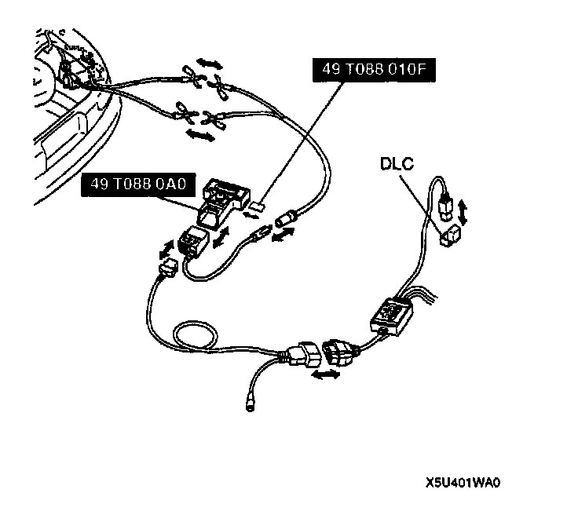
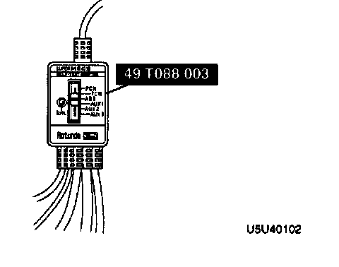

Description of On-Board Diagnostics - ABS
^ The On-Board Diagnostic (OBD) test inspects the integrity and function of the ABS and outputs the test results when requested by the NGS tester. If also provides a quick end inspection of the ABS, is usually performed at the start of each diagnostic procedure with all accessories off and is performed at end of most troubleshooting tests for verification of repair and make sure no other faults were incurred while servicing a previous fault.Note: Make sure that ignition switch is at OFF.
1. Insert the vehicle interface module and program card into the Special Service Tool (SST) (NGS tester) control unit.

2. Plug the New Generation Star (NGS) OBD II adapter into the interface module and the connector into the vehicle Data Link Connector (DLC) located in the engine compartment via the SUPER MECS adapter.
3. Plug the SST (NGS tester) power cable into the cigarette lighter or use a battery hook-up adapter.
4. Listen for a double beep. The SST (NGS tester) is now initialized.
5. Set the SST (SUPER MECS adapter) to ABS.

TROUBLESHOOTING NOTE
^ The ABS is composed of electrical components, a mechanical component (ABS hydraulic unit), and standard system components. Fundamentally, malfunctions of the ABS electrical or mechanical components are judged by the on-board diagnostic program within the ABS control module. Malfunctions are indicated by a warning light on the instrument cluster. The technician can locate a malfunction by switching the system to the diagnostic test mode.
^ The on-board diagnostic system must be used when diagnosing the ABS.